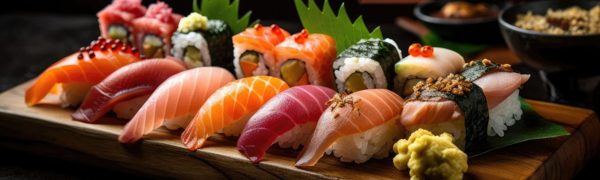
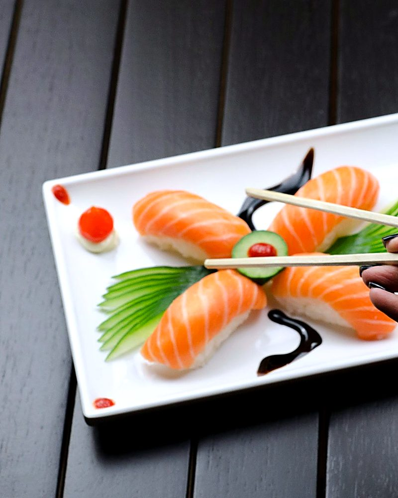
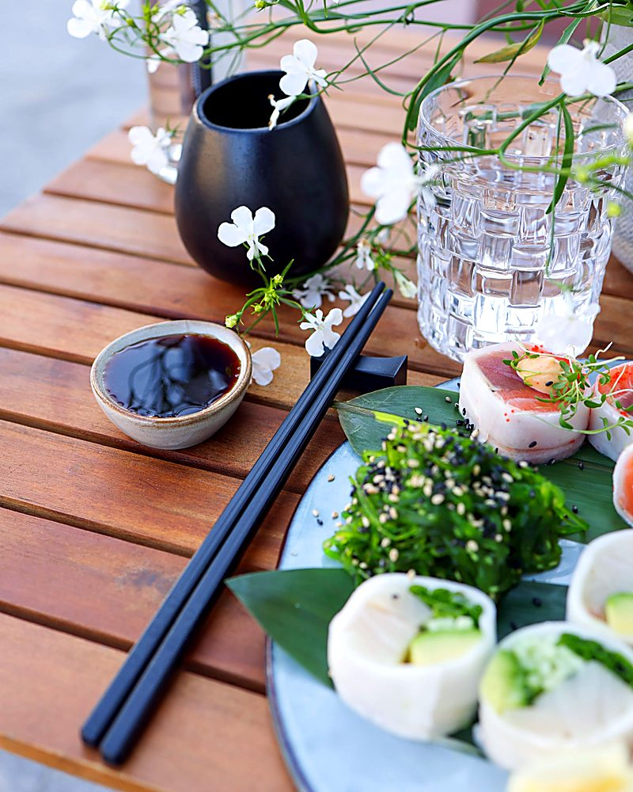
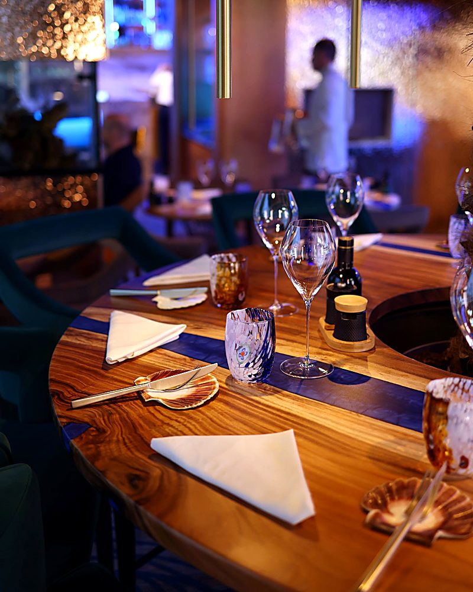
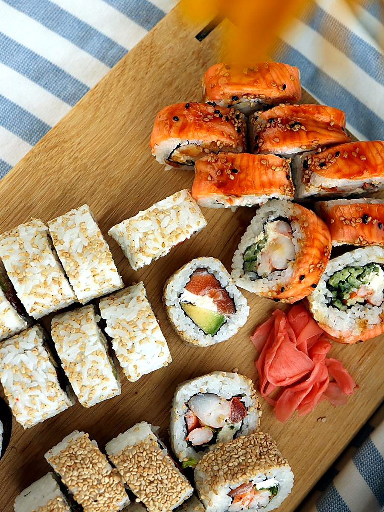
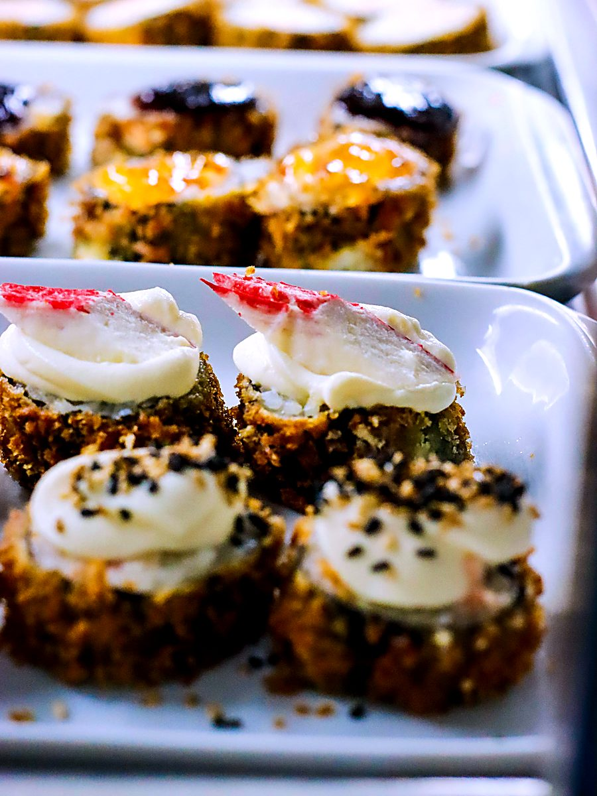
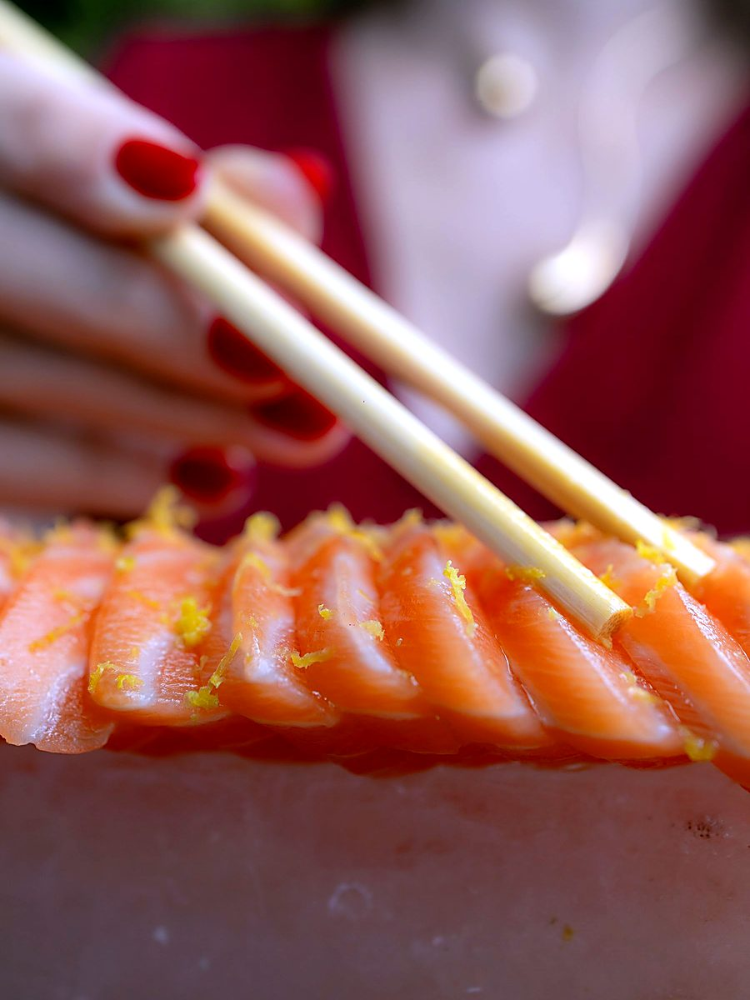
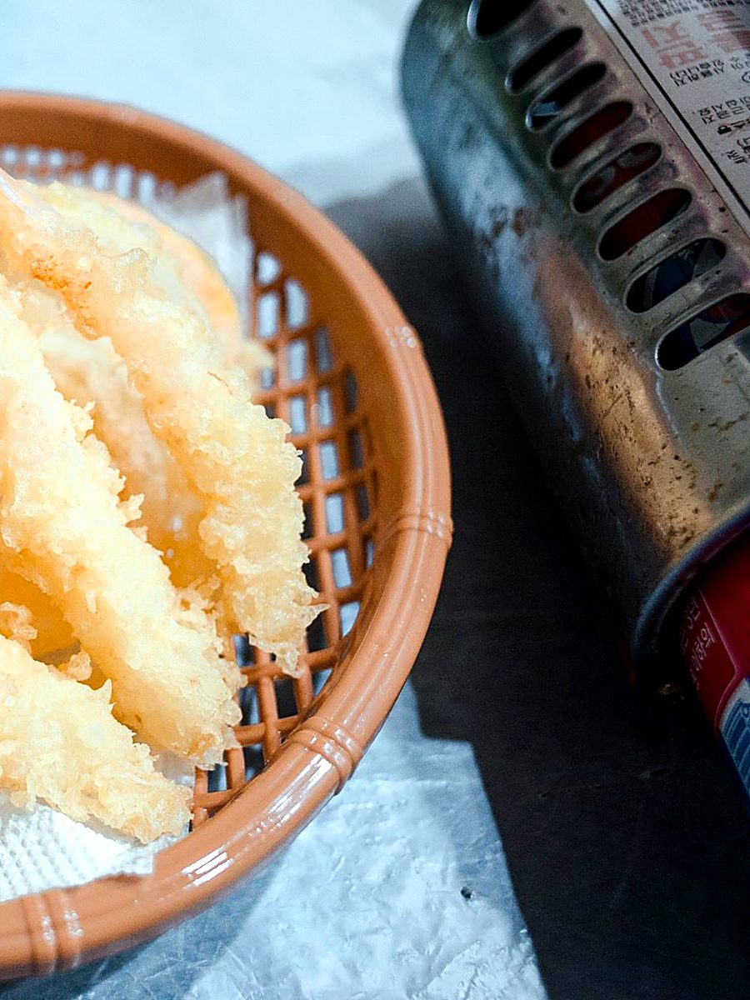
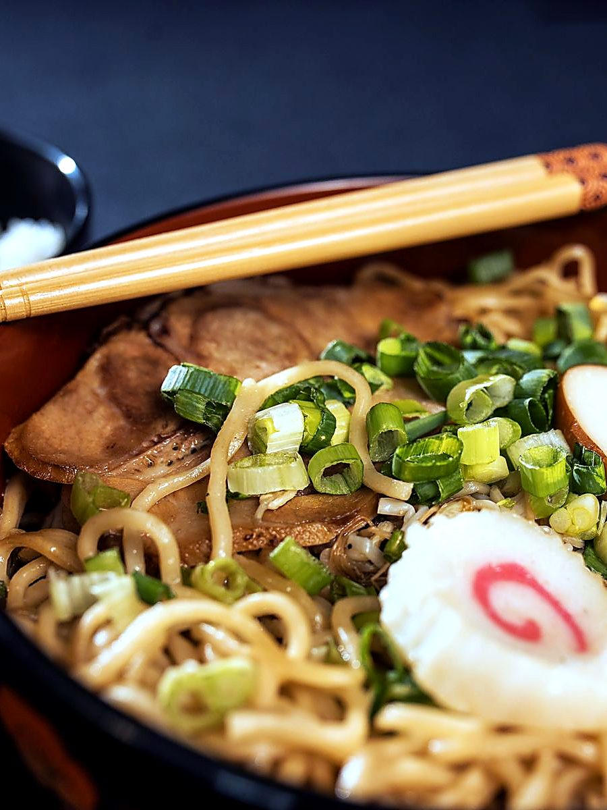
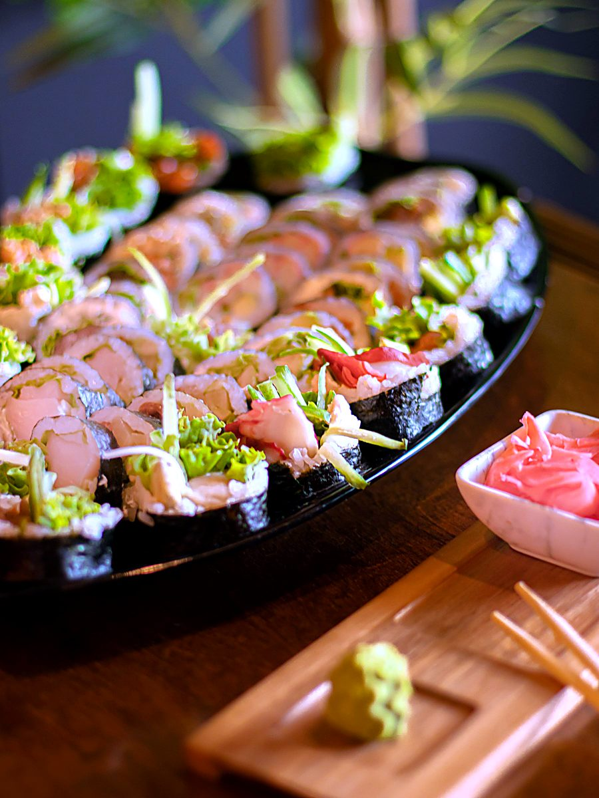

Regular 並
adults
The full order sheet: maki raw and cooked, hand rolls, nigiri, special rolls, and every kitchen item — tempura, teriyaki, curry, noodles, dessert.
- Adults
- Child 10–12
- Under 10 · lunch
和食 — WINCHESTER, MASSACHUSETTS
All-you-can-eat sushi.
Order by the sheet,
keep going.
01 — 町の食卓 / OUR TABLE
Dining in works from an order sheet: tick what you want, in rounds, for as long as you are hungry. Maki, hand rolls, nigiri raw and cooked, special rolls, and the whole kitchen menu — tempura, teriyaki, curry, noodles and dessert — all on the one price.

Cut to order at the bar.



Nigiri and rolls are cut and pressed when your sheet reaches the bar — not sitting under glass waiting for somebody to want them.
Vegetarian rolls and kitchen dishes run right through the menu, so nobody at the table ends up ordering around the edges.
Everything off the bar is on the same all-you-can-eat price — maki, hand rolls, nigiri and the special rolls. Tick a round, then another. Nothing costs extra.
04 — 店内 / THE ROOM
drag or scroll
01
02
03
04
05
0605 — ご来店 / VISIT
Walk in and we will find you a table, or order online for pickup and delivery. For a large group or a particular time, send us the details below and we will call you back.